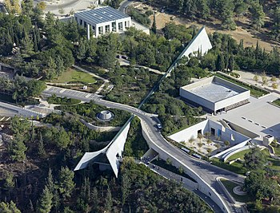
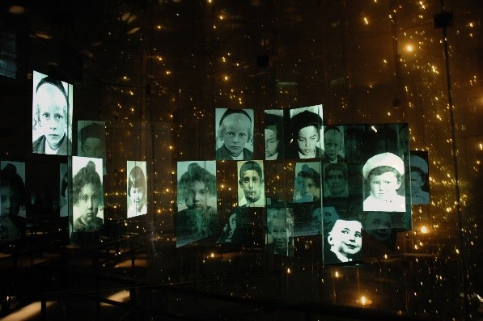
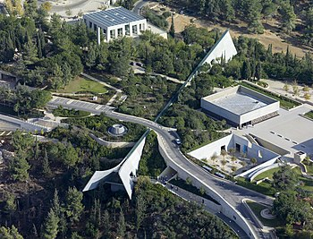
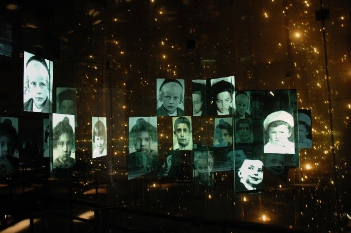

בס"ד
″And to them will I give in my house and within my walls a memorial and a name (a 'yad vashem')... that shall not
be cut off.″
(Isaiah, chapter 56, verse 5)
Established in 1953 by an act of the Knesset (Israeli Parliament), Yad Vashem, the World Holocaust Remembrance
Center, is entrusted with the task of commemorating, documenting, researching and educating about the Holocaust:
remembering the six million Jews murdered by the German Nazis and their collaborators, the destroyed Jewish
communities, and the ghetto and resistance fighters; and honoring the Righteous Among the Nations who risked
their lives to rescue Jews during the Holocaust.
Yad Vashem encompasses 45 acres on the Mount of Remembrance in Jerusalem and is comprised of various museums,
research and education centers, monuments and memorials.
Among these are the Museum Complex, the Hall of Remembrance, the Valley of the Communities and the Children's
Memorial.
Each year some one million people visited Yad Vashem, and millions more visit its website, which is now
available in eight languages.
With increasing interest being displayed worldwide in the events of the Holocaust as well as its Jewish and
universal significance, and dramatic changes in the basic tools for commemoration, Yad Vashem continually
strives to meaningfully impart the memory and meanings of the Holocaust to future generations
Yad Vashem was first proposed in September 1942, at a board meeting of the Jewish National Fund, by Mordecai Shenhavi, a member of Kibbutz Mishmar Ha'emek.
In August 1945, the plan was discussed in greater detail at a Zionist meeting in London. A provisional board of Zionist leaders was established that included David Remez as chairman, Shlomo Zalman Shragai, Baruch Zuckerman, and Shenhavi.
In February 1946, Yad Vashem opened an office in Jerusalem and a branch office in Tel Aviv, and in June that year convened its first plenary session. In July 1947, the First Conference on Holocaust Research was held at the Hebrew University of Jerusalem.
However, the outbreak of the 1947-1949 Palestine war brought operations to a standstill for two years.
On 19 August 1953, the Knesset, Israel's Parliament, unanimously passed the Yad Vashem Law, establishing the Holocaust Martyrs' and Heroes' Remembrance Authority,
the aim of which was "the commemoration in the Homeland of all those members of the Jewish people who gave their lives, or rose up and fought the Nazi enemy and its collaborators," and to set up "a memorial to them, and to the communities,
organizations and institutions that were destroyed because they belonged to the Jewish people."
On 29 July 1954, the cornerstone for the Yad Vashem building was laid on a hill in western Jerusalem, to be known as the Mount of Remembrance (Hebrew: Har HaZikaron);
the organization had already begun projects to collect the names of individuals killed in the Holocaust; acquire Holocaust documentation and personal testimonies of survivors for the Archives and Library; and develop research and publications.
The memorial and museum opened to the public in 1957.
The location of Yad Vashem on the western side of Mount Herzl, an area devoid of weighty historical associations, was chosen to convey a symbolic message of "rebirth" after destruction, distinct from the Chamber of the Holocaust, founded in 1948 on Mount Zion.
Thus, the latter museum, whose walls are lined with plaques memorializing over 2,000 Jewish communities destroyed during the Holocaust, portrays the Holocaust as a continuation of the "death and destruction" that plagued Jewish communities throughout Jewish history.
In 1982, Yad Vashem sponsored the International Conference on Holocaust and Genocide, which included six presentations on the Armenian genocide. It later withdrew from the conference after threats by the Turkish government that Jewish lives would be put in danger if the conference went ahead.
On 15 March 2005, a new Museum complex four times larger than the old one opened at Yad Vashem. It included the Holocaust History Museum with a new Hall of Names, a Museum of Holocaust Art, an Exhibitions Pavilion, a Learning Center and a Visual Center.
The new Yad Vashem museum was designed by Israeli-Canadian architect Moshe Safdie, replacing the previous 30-year-old exhibition. It was the culmination of a $100 million decade-long expansion project.
 


